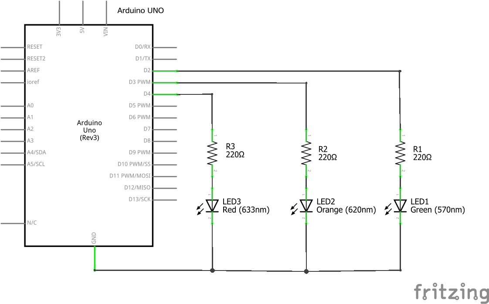
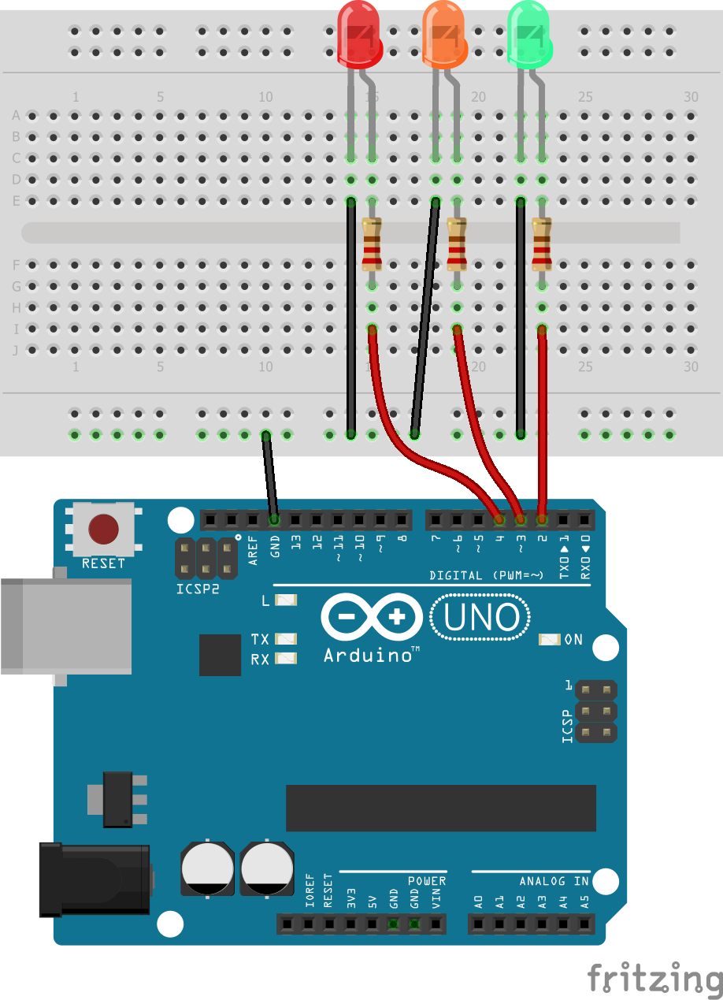

3. Tres Ledes¶
Monto a Protoboard El següent esquema elèctric.
{kind=link}

{kind=link}

: Descarregueu: `Circuit elèctric en format Fritzing <Protoboard/Arduino-Propo-03-TRES-LEDES.FZZ> '
Exercicis¶
El següent programa puja a la placa Arduino. Les tres LED han d’encendre’s alhora.
1 2 3 4 5 6 7 8 9 10 11 12 13 14 15 16 17 18 19 20
// Define el pin de cada led int LED_VERDE = 2; int LED_AMBAR = 3; int LED_ROJO = 4; // Ejecuta una sola vez las siguientes instrucciones void setup() { // Conecta los tres ledes a salidas pinMode(LED_VERDE, OUTPUT); pinMode(LED_AMBAR, OUTPUT); pinMode(LED_ROJO, OUTPUT); } // Repite para siempre las siguientes instrucciones void loop() { // Enciende los tres ledes digitalWrite(LED_VERDE, HIGH); digitalWrite(LED_AMBAR, HIGH); digitalWrite(LED_ROJO, HIGH); }
Modifica el programa anterior per encendre el LED verd, un segon després del LED ambre i un segon després del LED vermell.
La instrucció que s’ha d’utilitzar per esperar un segon és:
1
delay(1000);
Modifiqueu el programa anterior de manera que després que tots els LITES estiguin encesos, s’apaguen un per un, començant per apagar el LED vermell i acabar apagant el LED verd. El temps entre serà un segon.
La instrucció que s'ha d'utilitzar per desactivar un LED és:
1
digitalWrite(LED_VERDE, LOW);
Modifiqueu el programa per funcionar com a semàfor.
Primer el LED ** verd ** durant ** 3 segons ** s’encendrà.
El LED verd s’apagarà llavors i el LED ** Amber ** s’encendrà durant ** 1 segon **.
El LED ambre sortirà a sota i el LED vermell ** ** durant ** 3 segons ** s'encendrà.
La seqüència es repetirà contínuament.
Modifiqueu el programa anterior per al LED ambre a parpellejar tres vegades. L’encesa i el temps d’execució seran mig segon.
Feu un programa amb una seqüència diferent dels exercicis anteriors.